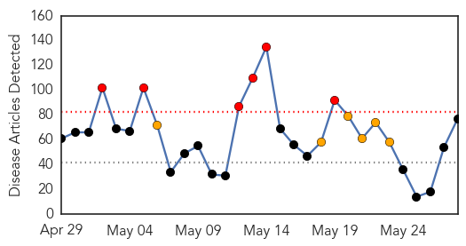
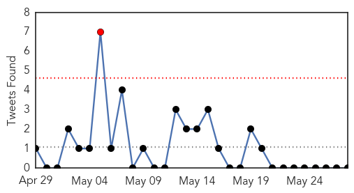
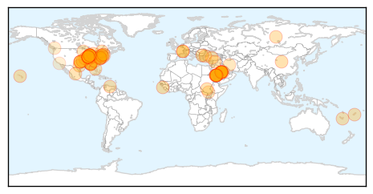
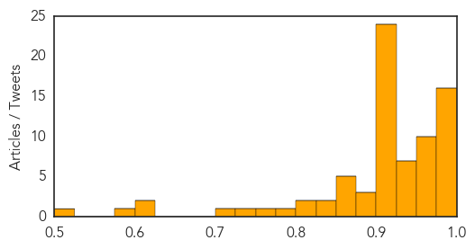

Unknown
30-Day Web Trend
6 alerts, 6 warnings

30-Day Twitter Trend
1 alerts, 0 warnings

Article Locations

Article Confidences
Top Articles:
- 1.000
- MERS, or Middle Eastern Respiratory Syndrome, virus likely to reach Australia, health authorities warn
- 1.000
- 3rd Suspected MERS Case Was False Alarm
- 0.998
- CDC Expert What Nevadans Need to Know About MERS
- 0.997
- UPDATE 1-U.S. MERS patient did not infect Illinois resident: CDC
- 0.997
- Deadly respiratory disease MERS spreads to Iran
- 0.997
- U.S. MERS patient did not infect Illinois resident: CDC
- 0.996
- CDC Retracts Initial Human-to-Human MERS Virus Infection : Health & Medicine : Science World Report
- 0.996
- Saudi health minister says working with WHO to fight MERS
- 0.996
- MERS battle: Health Minister working with WHO
- 0.996
- Ebola virus disease, West Africa (Situation as of 27 May 2014) - Guinea
- 0.996
- Saudi health minister says working with WHO to fight MERS
- 0.995
- Saudi health minister says working with WHO to fight MERS
- 0.987
- Oklahoma Man Dies after Acquiring Heartland Virus
- 0.983
- Iran Reports Its First Cases Of MERS Virus
- 0.982
- U.S. MERS patient did not infect Illinois resident: CDC
- 0.979
- U.S. Patient Didn't Spread MERS, CDC Says
- 0.971
- Two Hospital Patients Die After Bacterial Infection
- 0.968
- UAB Hospital waited too long to report legionella outbreak leaving 2 dead, 7 infected, state officials say
- 0.966
- Norovirus at a luxury collection hotel: The Royal Hawaiian in Waikiki
- 0.965
- 2 patients die at UAB after testing positive for legionellosis
- 0.965
- Officials say more testing shows MERS did not spread to Illinois
- 0.965
- Hunt for MERS source should look beyond camels - veterinary officials
- 0.959
- MERS virus likely to show up in Australia 28/05/2014
- 0.958
- Gulf Daily News World News Pace of Mers infections 'slowing'
- 0.952
- Hunt for MERS source should look beyond camels
- 0.952
- Second Death from Heartland Virus Reported
- 0.948
- 28/05/2014: MERS will arrive soon
- 0.948
- Okla. Department Of Health Confirms First Death Of Heartland Virus
- 0.944
- Hunt for MERS source should look beyond camels: veterinary officials
- 0.940
- Exclusive: Deadly pig virus re-infects U.S. farm, fuels supply fears
- 0.938
- EXCLUSIVE-Deadly pig virus re-infects U.S. farm, fuels supply fears
- 0.934
- Deadly 2012 outbreak at "medical spa" linked to workers
- 0.926
- Deadly Pig Virus Re-infects U.S. Farm
- 0.924
- Poor infection control likely led to infections in medspas
- 0.917
- Chicago Tribune
- 0.917
- Chicago Tribune
- 0.917
- Chicago Tribune
- 0.917
- Chicago Tribune
- 0.917
- Chicago Tribune
- 0.917
- Chicago Tribune
- 0.917
- Chicago Tribune
- 0.917
- Chicago Tribune
- 0.917
- Chicago Tribune
- 0.917
- Chicago Tribune
- 0.917
- Chicago Tribune
- 0.917
- Chicago Tribune
- 0.917
- Chicago Tribune
- 0.917
- Chicago Tribune
- 0.917
- Chicago Tribune
- 0.917
- Chicago Tribune
Showing top 50 articles...
Top Tweets:
-
No tweets found for May 28, 2014